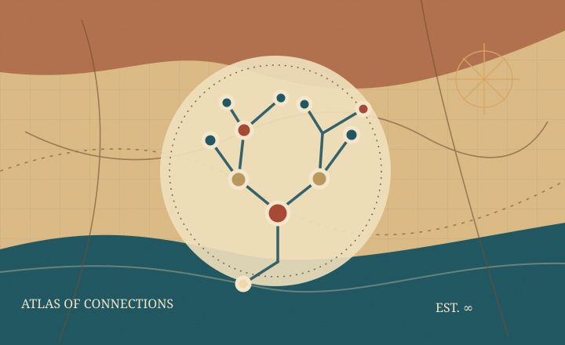
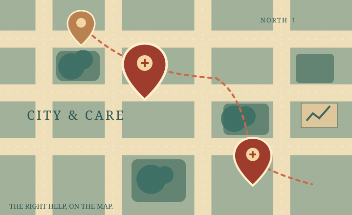
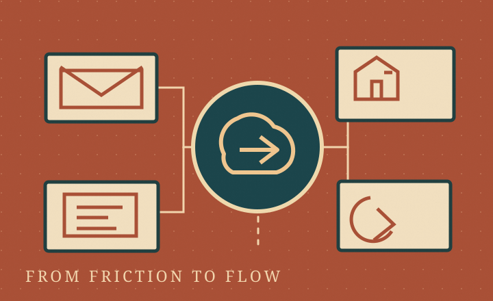

WAMIF
Family history becomes a place you can explore: connecting people, events, timelines, and geography through GEDCOM data.
Full-stack engineer · Builder · Problem solver
I turn tangled workflows, complicated data, and everyday frustrations into clear, useful software.
The thread running through it all
Good software helps people see what matters, act with confidence, and reclaim time for the work only they can do.
Chapter 01 / Selected work
Real projects, real engineering decisions, and a few interesting problems still being explored.

Family history becomes a place you can explore: connecting people, events, timelines, and geography through GEDCOM data.

Making shelter and service information easier to find through responsive location-based exploration and useful filters.

A growing set of specialized dashboards and a shared integration layer for organized, AI-assisted information flows.

Untangling real-world technology: domain and email repair, APIs, workflows, deployment, and apps that need to talk to one another.
More of the story on GitHub
Chapter 02 / The craft
Thoughtful interfaces matter. So do the architecture, data, testing, and operational details that make an application dependable.
React, TypeScript, Next.js, responsive UI, accessibility, and interactions built around real users.
Node, .NET, REST/GraphQL, authentication, databases, and integrations that bridge existing tools.
Maps, dashboards, visualizations, SQL, and clear ways to navigate complicated information.
AWS, deployment pipelines, troubleshooting, quality checks, and pragmatic production support.
Chapter 03 / A winding path
My path into engineering began with hands-on problem-solving outside tech. I carried that curiosity into software, through an intensive engineering program, code-review mentorship, and professional product teams.
Today I bring the same mindset to everything I build: understand the real problem, learn what matters, and leave things better than I found them.
More about my experienceYears in a busy mixed-animal veterinary practice taught careful observation, calm troubleshooting, and empathy.
Full-stack training followed by technical mentorship, extensive live code reviews, and collaborative development sprints.
Contributing to large application ecosystems across web, mobile, APIs, data, and cloud infrastructure.
Exploring practical AI-assisted development, useful products, and connected tools for organizations of all sizes.
Chapter 04 / Your move
Hiring an engineer? Need an integration, custom tool, or second set of eyes on a stubborn system? I’d love to hear the problem.
james@tuckerwray.com